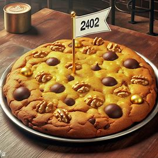

Téli különlegességek
A Napsugár Kávéház mindig próbálja követni az évszakokat és trendeket, és ez idén télen sem változott. Különleges téli kínálatunkből természetesen nem hiányozhatnak sem a karácsonyi, sem pedig az újévi különlegességek. Februárban igazi valentinnapi és szilveszteri specialitásokkal kedveskedünk vendégeinknek, valamint továbbra sem maradhatnak ki a csillagnaptárat követő italjaink sem: November végén és december elején a nyilasoknak kedvezünk, míg decembr vége és január eleje a bakok ideje lesz, utánuk a vízöntőknek hozunk valami igazán különlegeset, és végül a februárt a kosok italával zárjuk.
Karácsonyi kínálatunk
Mézeskalács álom
Frissen főzött espresso forró habosított tejjel és sok sok mézeskalács ízesítéssel, hogy igazán megédesítse az ünnepeket.
Hideg borsmenta varázslat
A hideg, mentás tej és a meleg espresso keveréke tökéletesen imitálja az igazi téli borzongós, arccsipkedő hideget. Az ital tetejére tört bosrmenta cukrot szórunk és az italt kanál helyett egy cukorpálcával tálaljuk.
Újévi kínálatunk
B.U.É.K. Süti
Mi lenne jobb az újév kezdésre, mint egy jó nagy darab omlós csokis süti? Egy még nagyobb, még csokisabb omlós süti rengeteg tündérporral! De csak óvatosan, mert csak december 31-én és január 1-én lesz majd kapható!
Valentinnapi kínálatunk
Szerelmesek bájitala
Valentin nap alkalmából egy igazi szerelmeseknek való itallal készültünk. A meleg epres-tejes kávét nagy adag vanília fagyival és fagyasztott eper szeletekkel bolondítottuk meg. Az italt természetesen két szívószállal és egy kis szerelmet hozó tündérporral tálaljuk.
Farsangi kínálatunk
Maszkos hármas
Mint ahogy a farsang arról szól, hogy nem annak tűnünk, akik vagyunk, ugyanúgy ez az ital is három különböző alakot ölt. A hármas egy áfonyás, zöldalmás, és egy narancsos keverékből áll, melyek akár külön-külön, akár összeöntve fogyaszthatóak.
Csillagjegyes italaink
Nyilasok itala!
Idén a nyilasoknak extrahabos tejeskávét ajánlunk, mely magában hordozza a galaxis és a csillagképek relytéjét. Piros tündérpor és csokiból készült csillagok adják a szenvedélyt, ami igazán hiányzik a nyilasok életéből.
Bakok itala!

Idén a bakoknak szokásunkhoz híven egy nagy adag meleg tejeskávéval kedveskedünk, amely magában hordozza a galaxis és a csillagképek relytéjét. Kék tündérpor és fehércsokiból készült csillagok biztosítják a magabiztosságot, amire a bakoknak idén szükségük lesz.
Vízöntők itala!
Idén a vízöntőknek szívmelengető tejeskávét készítettünk, mely magában hordozza a galaxis és a csillagképek relytéjét. Lila tündérpor és csokiból készült csillagok biztosítják a szeretet és meghittség érzését, amiből szeretett vízöntőinknek kevés jutott a múlt évben.
Kosok itala!
Idén a kosoknak extrameleg tejeskávét ajánlunk, mely magában hordozza a galaxis és a csillagképek relytéjét. Zöld tündérpor és csokiból készült csillagok Árasztják magukból a szerencsét, amire idén igazán szüksége lesz kos barátainknak.